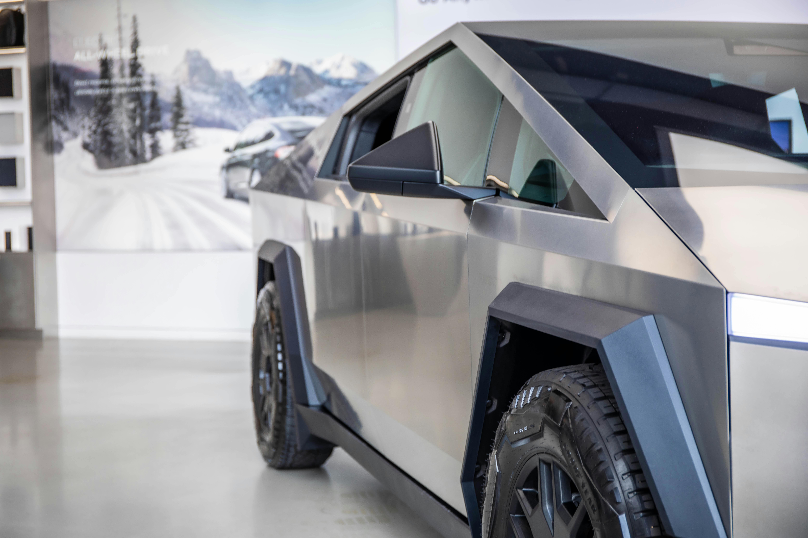

Early History (1885-1920)
The history of the automobile begins in the late 19th century. In 1885, Karl Benz developed the Motorwagen, widely regarded as the first true automobile. Powered by an internal combustion engine, this three-wheeled vehicle marked the beginning of the automotive era.
In the United States, the Duryea brothers produced the first successful American gasoline-powered car in 1893. By 1908, Henry Ford revolutionized manufacturing with the Model T and the moving assembly line, making automobiles affordable for the middle class.
Early automobiles were often open-air designs, resembling horseless carriages. They featured rudimentary controls, minimal comfort features, and required significant skill to operate. Despite these limitations, they represented a revolutionary advancement in personal transportation.
1885
Karl Benz creates the first practical automobile with an internal combustion engine.
1893
The Duryea brothers build the first successful American gasoline automobile.
1908
Ford Model T introduced, revolutionizing mass production of automobiles.
1913
Ford implements the moving assembly line, dramatically reducing production time.
Golden Age (1920s-1960s)
The period between the 1920s and 1960s is often considered the golden age of automobiles. This era saw tremendous innovation in design, engineering, and manufacturing. Cars became more reliable, comfortable, and stylish, evolving from basic transportation to status symbols.
The 1920s introduced features like electric starters, enclosed cabins, and hydraulic brakes. The 1930s saw the development of more powerful engines and the introduction of streamlined designs. Despite the Great Depression, luxury automakers like Duesenberg, Packard, and Cadillac created some of the most elegant vehicles ever produced.
Following World War II, the automotive industry experienced unprecedented growth. The 1950s brought iconic designs with elaborate tailfins, chrome accents, and powerful V8 engines. European sports cars gained popularity, and Japanese manufacturers began entering the global market.
1925
Chrysler Corporation founded, introducing innovative engineering features.
1938
Volkswagen Beetle designed as the "people's car" in Germany.
1953
Chevrolet introduces the Corvette, America's first production sports car.
1964
Ford Mustang debuts, creating the "pony car" segment.
Modern Era (1970s-2000s)
The 1970s marked a significant shift in the automotive industry, largely driven by the oil crisis and increasing environmental concerns. Fuel efficiency became a priority, and smaller, more economical cars gained popularity. This period also saw the introduction of stricter emissions and safety regulations.
Japanese manufacturers like Toyota and Honda established themselves as leaders in quality and reliability during this time. European luxury brands continued to innovate with advanced engineering and safety features, while American manufacturers adapted to changing market demands.
The 1980s and 1990s saw the rise of computer technology in automobiles, with electronic fuel injection, anti-lock braking systems, and airbags becoming standard. The SUV segment emerged as a dominant force in the market, combining passenger car comfort with utility vehicle capabilities.
1973
Oil crisis prompts shift toward fuel-efficient vehicles.
1984
Chrysler introduces the minivan, creating a new vehicle category.
1990
Mazda MX-5 Miata revives the affordable sports car market.
1997
Toyota Prius becomes the first mass-produced hybrid vehicle.
Future Trends (2010s-Present)

The automotive industry is currently undergoing its most significant transformation since the invention of the car itself. Electrification, autonomous driving technology, and connectivity are reshaping how vehicles are designed, built, and used.
Electric vehicles have moved from niche products to mainstream options, with nearly every major manufacturer committing to electrification. Companies like Tesla have demonstrated that electric vehicles can offer performance, range, and features that compete with or exceed traditional combustion engine vehicles.
Advanced driver assistance systems (ADAS) are paving the way toward fully autonomous vehicles. Features like adaptive cruise control, lane-keeping assistance, and automated parking are becoming common in mid-range vehicles, while experimental self-driving technology continues to advance.
2008
Tesla Roadster launches as the first highway-legal production electric car.
2014
Tesla introduces Autopilot, advancing driver assistance technology.
2018
Major manufacturers announce plans to phase out combustion engines.
2023
Solid-state batteries begin entering production, promising increased range for EVs.